1918 — 2076
타임머신
스크롤하면 시간이 흐릅니다
 19181차 세계대전 종전정치·전쟁
19181차 세계대전 종전정치·전쟁 19181918년 인플루엔자 대유행생명·의학
19181918년 인플루엔자 대유행생명·의학 1919일식이 증명한 상대성이론과학
1919일식이 증명한 상대성이론과학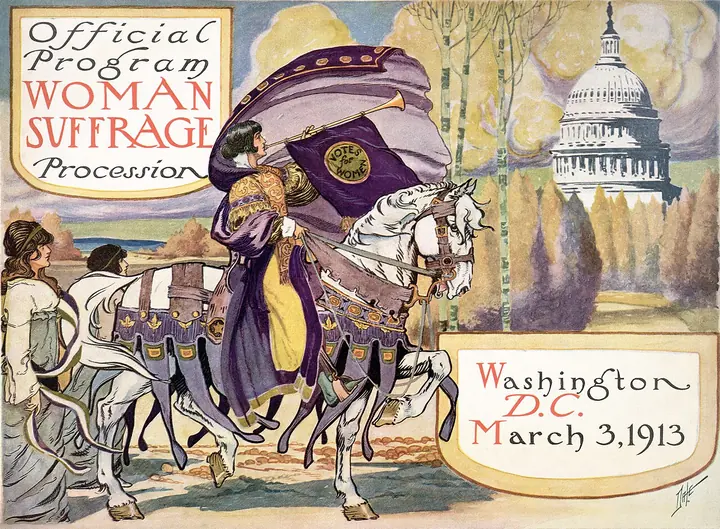
1920여성 참정권의 확산사회 1920라디오 방송의 시작기술
1920라디오 방송의 시작기술 1927양자역학의 완성과학
1927양자역학의 완성과학 1928페니실린 발견생명·의학
1928페니실린 발견생명·의학 1929대공황경제
1929대공황경제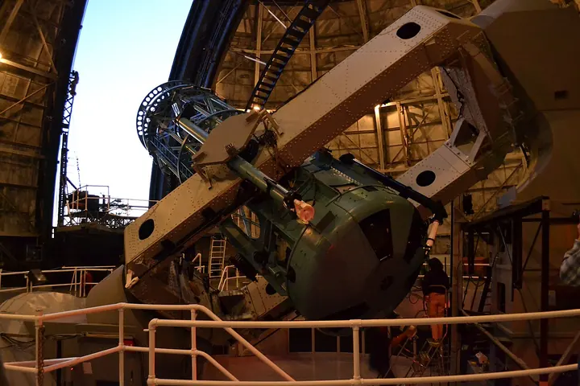
1929팽창하는 우주과학 1938핵분열 발견과학
1938핵분열 발견과학 19392차 세계대전정치·전쟁
19392차 세계대전정치·전쟁 1944브레턴우즈 체제경제
1944브레턴우즈 체제경제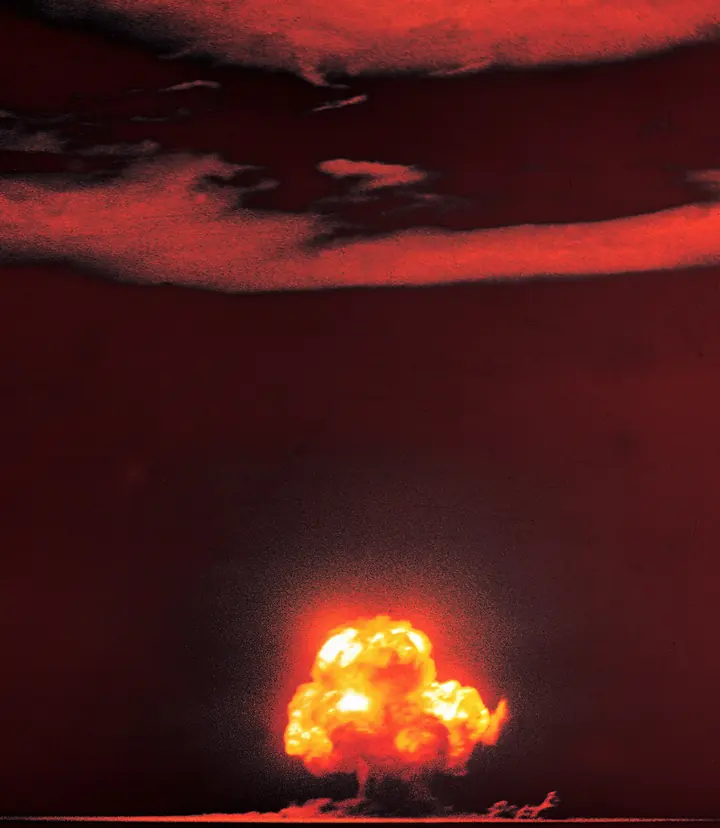
1945핵무기의 등장정치·전쟁1945유엔 창설정치·전쟁 1946전자식 컴퓨터 에니악기술
1946전자식 컴퓨터 에니악기술 1947트랜지스터 발명기술
1947트랜지스터 발명기술 1947인도 독립과 탈식민정치·전쟁
1947인도 독립과 탈식민정치·전쟁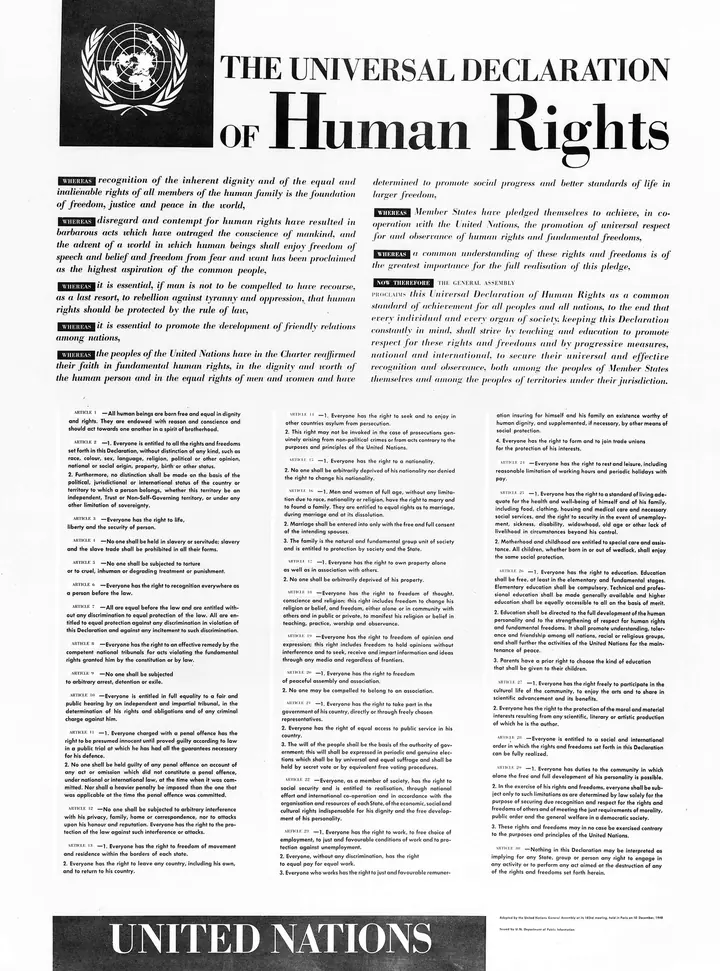
1948세계인권선언사회 1950한국전쟁정치·전쟁
1950한국전쟁정치·전쟁 1953DNA 이중나선생명·의학
1953DNA 이중나선생명·의학 1955소아마비 백신생명·의학
1955소아마비 백신생명·의학 1956컨테이너 운송 혁명경제
1956컨테이너 운송 혁명경제 1957로마 조약과 유럽 통합경제
1957로마 조약과 유럽 통합경제 1957스푸트니크 — 우주 시대과학
1957스푸트니크 — 우주 시대과학 1960먹는 피임약사회
1960먹는 피임약사회 1961인류 첫 우주 비행과학
1961인류 첫 우주 비행과학 1962쿠바 미사일 위기정치·전쟁
1962쿠바 미사일 위기정치·전쟁 1963워싱턴 대행진과 민권운동사회
1963워싱턴 대행진과 민권운동사회 1966녹색혁명생명·의학
1966녹색혁명생명·의학 1969아폴로 11호 달 착륙과학
1969아폴로 11호 달 착륙과학 1969아파넷 — 인터넷의 시작기술
1969아파넷 — 인터넷의 시작기술 1971닉슨 쇼크 — 금과 달러의 결별경제
1971닉슨 쇼크 — 금과 달러의 결별경제 1971마이크로프로세서기술
1971마이크로프로세서기술 1973석유 파동경제
1973석유 파동경제 1978중국 개혁·개방경제
1978중국 개혁·개방경제 1980천연두 박멸생명·의학
1980천연두 박멸생명·의학 1981개인용 컴퓨터기술
1981개인용 컴퓨터기술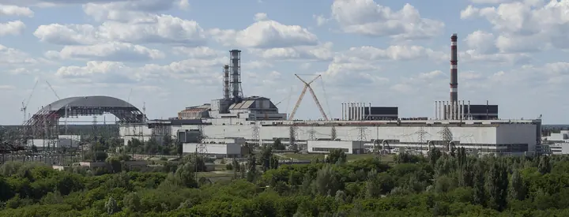
1986체르노빌 원전 사고사회 1987한국 6월 민주항쟁정치·전쟁
1987한국 6월 민주항쟁정치·전쟁 1987몬트리올 의정서사회
1987몬트리올 의정서사회 1989베를린 장벽 붕괴정치·전쟁
1989베를린 장벽 붕괴정치·전쟁 1989월드와이드웹기술
1989월드와이드웹기술 1991소련 해체와 냉전 종식정치·전쟁
1991소련 해체와 냉전 종식정치·전쟁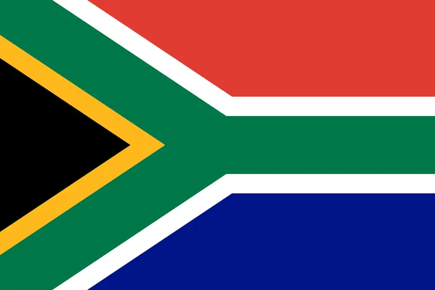
1994아파르트헤이트의 끝사회 1995세계무역기구와 세계화경제
1995세계무역기구와 세계화경제 1996복제 양 돌리생명·의학
1996복제 양 돌리생명·의학 1997아시아 외환위기경제
1997아시아 외환위기경제 1998국제우주정거장과학
1998국제우주정거장과학 20019·11 테러정치·전쟁
20019·11 테러정치·전쟁 2003인간 게놈 해독생명·의학
2003인간 게놈 해독생명·의학 2004소셜 미디어의 시대사회
2004소셜 미디어의 시대사회 2007스마트폰기술
2007스마트폰기술 2008세계 금융위기경제
2008세계 금융위기경제 2009비트코인경제
2009비트코인경제 2011아랍의 봄정치·전쟁
2011아랍의 봄정치·전쟁 2012힉스 입자 발견과학
2012힉스 입자 발견과학 2012크리스퍼 유전자 가위생명·의학
2012크리스퍼 유전자 가위생명·의학 2012딥러닝 혁명기술
2012딥러닝 혁명기술 2015파리 기후협정사회
2015파리 기후협정사회 2015중력파 첫 검출과학
2015중력파 첫 검출과학 2016알파고와 이세돌기술
2016알파고와 이세돌기술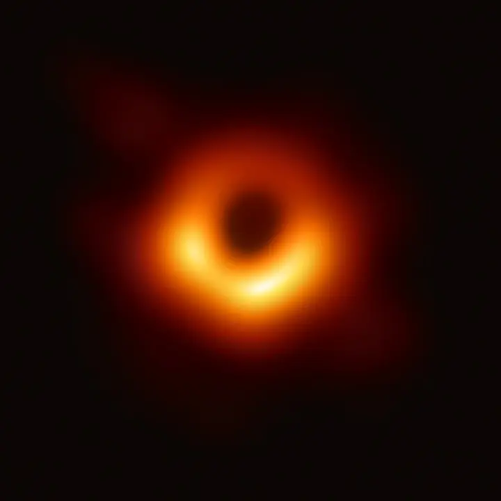
2019첫 블랙홀 사진과학 2020코로나19와 mRNA 백신생명·의학
2020코로나19와 mRNA 백신생명·의학 2020알파폴드 — 단백질 구조 예측과학
2020알파폴드 — 단백질 구조 예측과학 2021제임스 웹 우주망원경과학
2021제임스 웹 우주망원경과학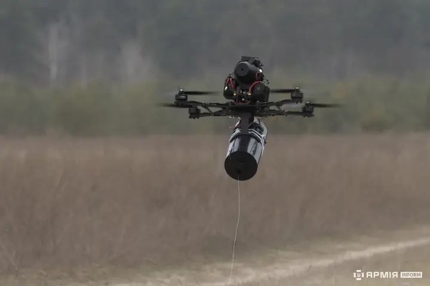
2022우크라이나 전쟁과 드론정치·전쟁 2022챗GPT와 생성형 인공지능기술
2022챗GPT와 생성형 인공지능기술 2022핵융합 점화과학
2022핵융합 점화과학 2025관세 전쟁경제
2025관세 전쟁경제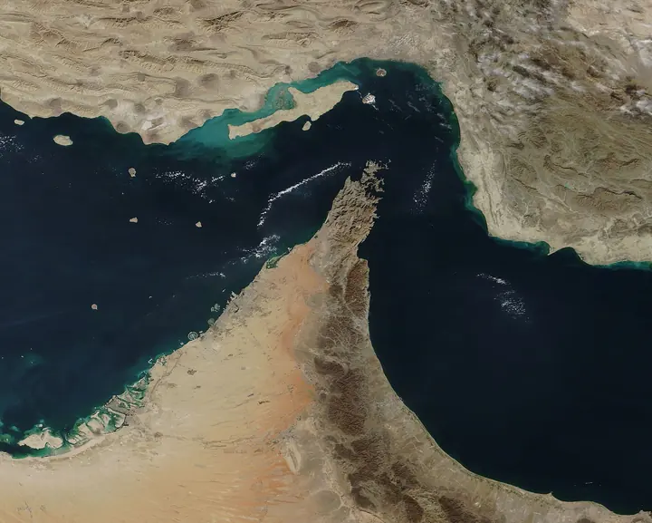
2026이란 전쟁과 호르무즈 봉쇄정치·전쟁 2026아르테미스 2호 — 다시 달로과학
2026아르테미스 2호 — 다시 달로과학 2026리만 가설 — 인공지능의 증명 발표과학
2026리만 가설 — 인공지능의 증명 발표과학지금 · 2026
여기부터는
일어날 법한 미래
사실이 아니라 예측입니다
 예측2028다시 달에 서는 사람들과학
예측2028다시 달에 서는 사람들과학 예측2030인공지능 연구자기술
예측2030인공지능 연구자기술 예측2033양자 컴퓨터와 암호 대전환기술
예측2033양자 컴퓨터와 암호 대전환기술 예측2035운전대 없는 차, 일하는 로봇기술
예측2035운전대 없는 차, 일하는 로봇기술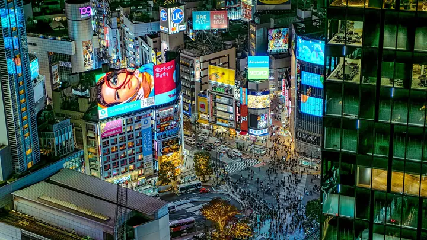
예측203790억 명의 지구, 늙어 가는 세계사회 예측2040내 유전자에 맞춘 치료생명·의학
예측2040내 유전자에 맞춘 치료생명·의학 예측2042일의 재정의경제
예측2042일의 재정의경제 예측2045핵융합 전기의 첫 불빛과학
예측2045핵융합 전기의 첫 불빛과학 예측2048화성에 간 첫 사람과학
예측2048화성에 간 첫 사람과학 예측2050탄소 중립의 갈림길사회
예측2050탄소 중립의 갈림길사회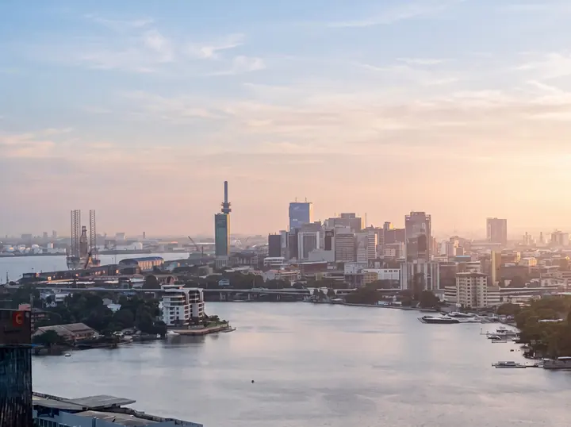
예측2055인류 셋 중 둘이 도시에사회 예측2062뇌와 기계의 연결, 느려지는 노화생명·의학
예측2062뇌와 기계의 연결, 느려지는 노화생명·의학 예측20762076년 — 인구 정점을 앞둔 지구사회
예측20762076년 — 인구 정점을 앞둔 지구사회2076
미래는 아직
정해지지 않았습니다
1918 — 2076
타임머신
1차 세계대전이 끝난 뒤부터 지금까지의 전환점 72개와, 그 흐름을 이어 본 앞으로 50년의 예측 13가지.